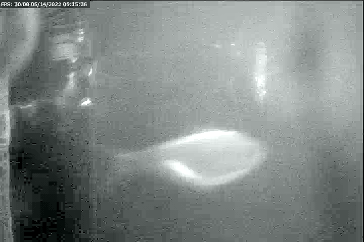

Current Projects

Cyanobacteria Monitoring
Roger Williams Park & Surrounding Freshwater Bodies
Tracking harmful cyanobacteria blooms to understand trends, inform public health advisories, and improve freshwater ecosystem management.

Juvenile Fish Seine Survey
Providence River Estuary
Conducting beach seine surveys to monitor juvenile fish populations and habitat changes. This long-term dataset (2017–present) helps track trends and ecosystem shifts and monitors the impact of habitat restoration efforts on fish populations and overall ecosystem health in urban estuarine environments.

Fish Passage Video Monitoring
Saugatucket and Pettaquamscutt Rivers
Using automated video capture to track river herring migration, comparing video monitoring techniques with visual count data to enhance accuracy in abundance measurements.